무엇을 만들고 왜 Claude Code인가
완성품은 'Oni Ronin'이라는 가상 게임의 소개 사이트예요. 아래 첫 화면을 보면 붉은 옷의 사무라이 캐릭터가 가운데 서 있고, 몸 둘레로 불꽃 같은 오라가 피어올라요. 이 캐릭터가 제자리에서 걷고, 스크롤하면 카메라가 캐릭터 둘레를 돌아요.
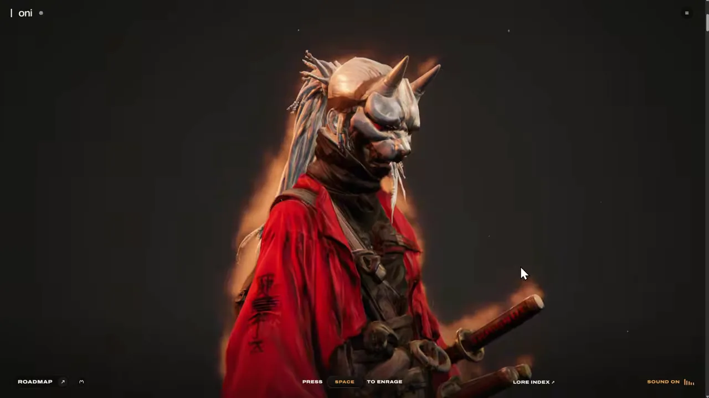
아래로 내려가면 'Special Services' 섹션이 나와요. 가운데 세로로 선 검을 축으로 유리 질감 카드가 돌고, 오른쪽에는 지금 앞에 온 카드의 번호와 이름(44, 'GFN7XIN PASS')이 떠요. 이 섹션은 3D 모델 없이 참고 영상 하나로 만들었어요.
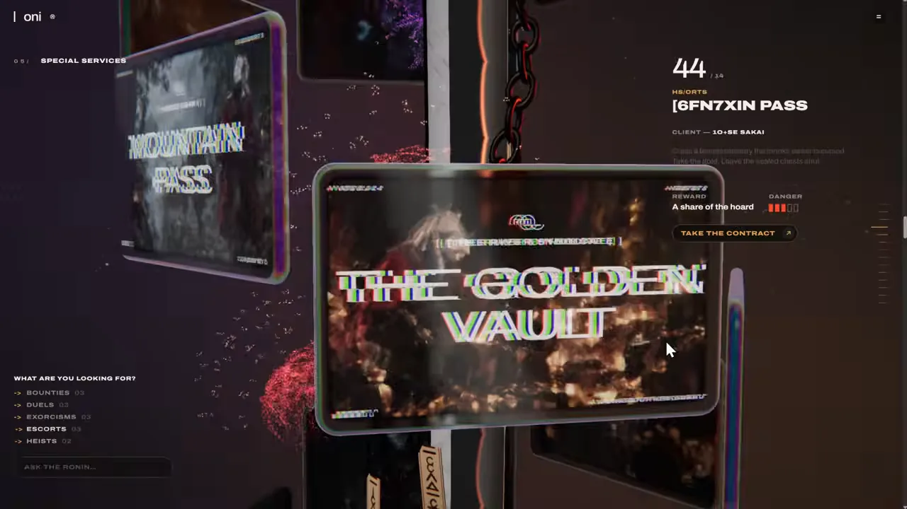
발표자는 Claude Code에서 Opus 5.5와 Sonnet 5.5를 썼어요. 다른 AI(Artificial Intelligence) 도구나 IDE(Integrated Development Environment)로도 따라 할 수 있다고 하면서도, 자기가 비교해 본 바로는 3D 환경·캐릭터 모델·애니메이션 작업에서 Claude Code가 가장 나았다고 말해요. 프롬프트, 이미지, 영상, 3D 모델은 설명란의 GitHub 저장소에 모두 올라와 있어서 생성 도구 비용 없이 따라 할 수 있어요.
영상 전체의 흐름을 한 장으로 그리면 이래요. 앞의 두 칸은 재료 준비, 가운데 두 칸은 Claude Code로 화면 만들기, 마지막 칸은 테스트예요.
캐릭터 그림을 3D 모델로 바꾸기
먼저 영감을 얻어요. 발표자는 Awwwards나 Pinterest를 둘러보다 마음에 드는 사무라이 캐릭터 그림을 찾아 받아 뒀어요. 그대로는 3D로 바꾸기 어려워서 한 번 다듬어요.
Higgsfield로 전신·투명 배경 이미지 만들기
Higgsfield의 이미지 생성 화면에 그림을 올리고 프롬프트에 세 가지를 적었어요. 아래 화면 하단 입력창을 보면 '칼·다리·신발까지 전신이 보이게', '3D 모델로 만들기 좋게', '배경을 투명하게'가 차례로 있어요. 그 아래 설정 줄에는 모델 GPT(Generative Pre-trained Transformer) Image 2.5, 해상도 4K가 골라져 있어요. 맨 왼쪽이 그 결과예요. 나머지 두 장(기린 그림)은 이 계정에 남아 있던 다른 생성물이라 이 작업과는 관계없어요.
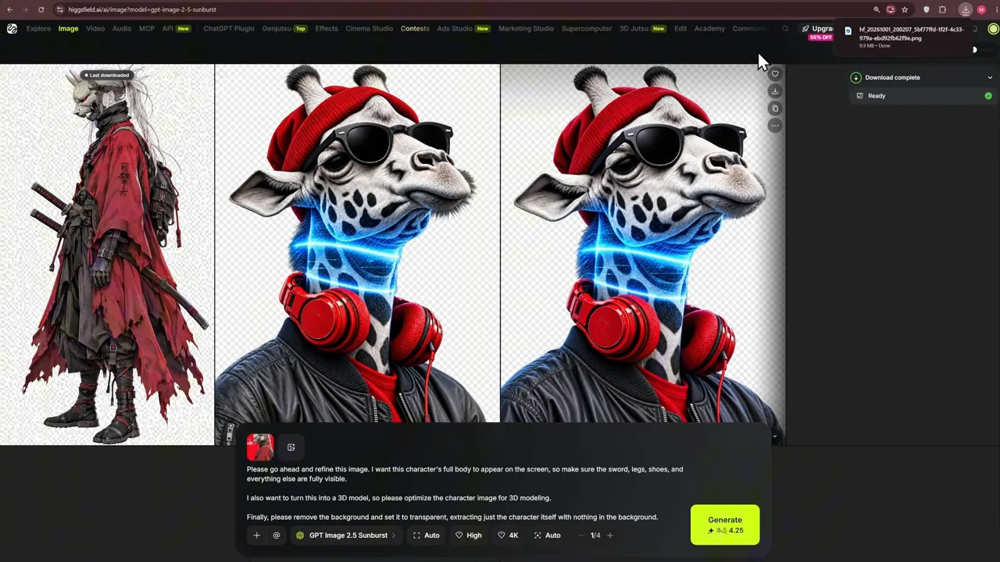
Tripo로 3D 모델 만들기
3D 모델을 얻는 길은 세 가지예요. 발표자가 올려 둔 모델을 그대로 쓰거나, Sketchfab에서 무료·유료 모델을 받거나, Tripo처럼 이미지로 3D를 만드는 도구를 써요. 발표자는 Tripo를 골랐어요.
Tripo에 이미지를 올리면 Clean Topology와 Best Quality 중 하나를 고르게 해요. 앞의 것은 토폴로지를 깔끔하게 만드는 쪽, 뒤의 것은 디테일을 살리는 쪽이에요. 발표자는 둘 다 해 봤는데 이 캐릭터는 Best Quality 쪽이 디테일이 더 살았다고 해요. 아래 화면 왼쪽 패널 위쪽에 'HD Model'이 선택돼 있고, 그 아래에 올린 캐릭터 이미지가 보여요. 왼쪽 세로 메뉴 아래쪽의 Rig(리깅)는 일부러 건너뛰었어요. Claude Code가 리깅까지 해낼 수 있는지 시험하려고요.
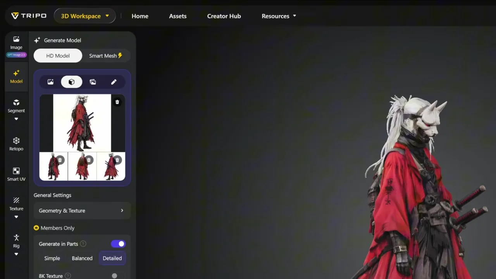
다 만들면 내보내요. Export 창의 Format 칸에 GLB가 골라져 있고, 텍스처 해상도는 4k예요. 오른쪽 위 수치를 보면 버텍스가 약 105만 개예요. 나중에 Claude가 이 모델을 '버텍스 약 110만 개'로 읽어 내는데, 같은 모델이에요. 받은 GLB 파일은 프로젝트 폴더에 옮겨 둬요. Claude가 이 파일을 직접 열어 봐야 하거든요.

히어로 섹션: 움직임은 녹화 영상으로
발표자가 참고한 사이트는 Awwwards에서 찾은 'HAPE'의 런던 페이지예요. 로딩 애니메이션 뒤 캐릭터 얼굴 클로즈업으로 시작하고, 스크롤하면 카메라가 원을 그리며 캐릭터 주위를 돌아요. 아래 화면은 그중 한 장면이에요. 하얀 옷의 캐릭터를 카메라가 옆에서 비추고, 오른쪽에 'STREET FASHION, YOUR STYLE' 문구가 떠 있어요.
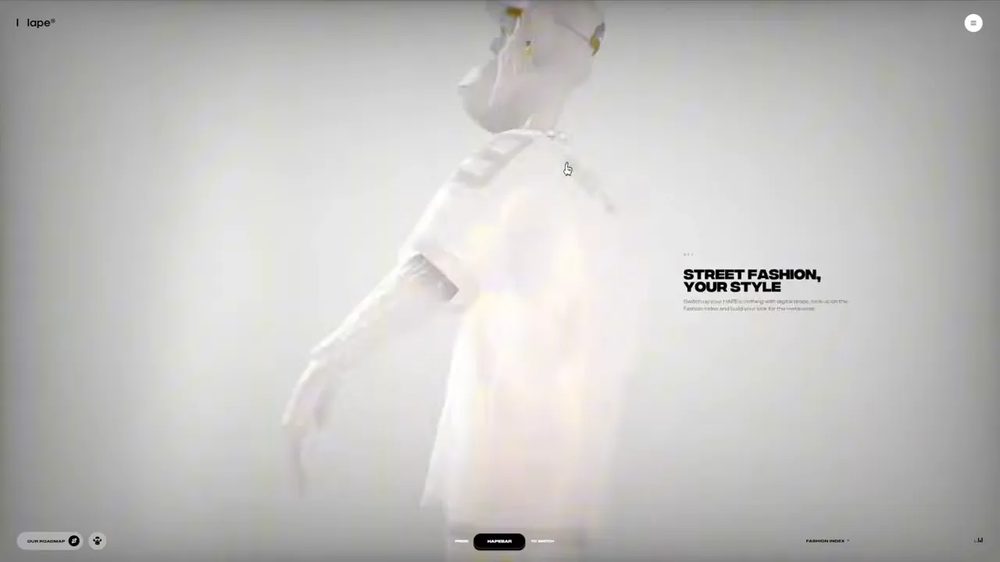
글 대신 녹화 영상을 붙여요
이런 움직임은 글로 설명하기 어려워요. 그래서 발표자는 참고 사이트의 로딩 장면과 스크롤 동작을 짧게 화면 녹화해서 프롬프트에 붙여요. 아래 화면 맨 위에 붙은 MP4(MPEG-4 Part 14) 파일이 그 녹화예요. 그 아래 프롬프트는 요구 사항을 번호로 나눠 적었어요.
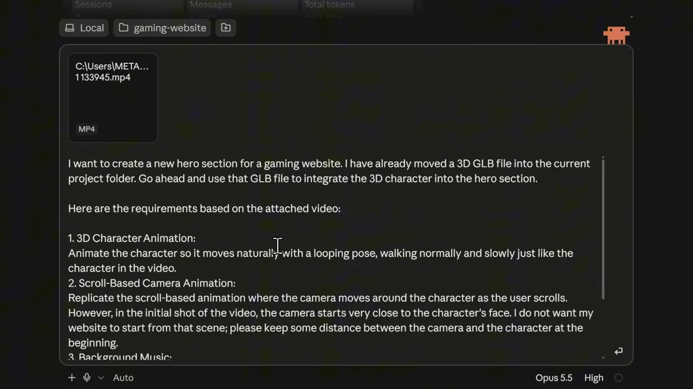
| 번호 | 요구 사항 | 영상과 다르게 한 점 |
|---|---|---|
| 1. 3D 캐릭터 애니메이션 | 영상처럼 천천히, 자연스럽게 제자리 걷기를 반복해요 | — |
| 2. 스크롤 카메라 | 스크롤하면 카메라가 캐릭터 둘레를 돌아요 | 첫 장면이 얼굴에 너무 붙지 않게 거리를 둬요 |
| 3. 배경 음악 | Higgsfield MCP(Model Context Protocol)로 영상 분위기에 맞는 음악을 만들어요 | — |
끝에는 "영상을 보고 똑같은 애니메이션과 상호작용을 적용하고, 히어로 섹션에만 집중하라"고 범위를 못 박았어요. 한 번에 사이트 전체를 시키지 않고 히어로 섹션 하나로 좁힌 거예요.
Higgsfield를 MCP로 연결해요
음악을 만들려면 보내기 전에 Higgsfield를 Claude에 연결해야 해요. Higgsfield 상단 메뉴의 MCP에서 Claude 앱 연결을 고르면, Claude 쪽 커스텀 커넥터 추가 화면으로 넘어가요. 이름(Higgsfield)과 MCP 서버 주소는 이미 채워져 있어요. 인증 방식은 그대로 두고 추가한 뒤 Higgsfield 계정으로 승인하면 돼요.
함정이 하나 있었어요. 연결을 마친 뒤 Claude 앱을 완전히 껐다 켜야 새 연결이 보였어요. 발표자는 첫 시도에서 재시작을 안 해서 Claude가 Higgsfield를 찾지 못했다고 해요.
Claude가 먼저 모델을 진단해요
무거운 작업이라 effort를 Max로 올려 보냈어요. 아래 화면 파란 강조 부분이 Claude의 첫 진단이에요. GLB가 Tripo로 만든 모델이고, 메시 조각 34개에 버텍스 약 110만 개인데 뼈대(skeleton)도 애니메이션도 없다고 읽었어요. 그래서 걷게 하려면 리깅부터 해야 한다며 Blender를 쓸 수 있는지, Higgsfield MCP가 연결됐는지 확인하겠다고 해요. 바로 위 문장에서는 녹화 영상을 '걷는 캐릭터, 스크롤 카메라 궤도, 필름 그레인, 따뜻한 림 라이팅'으로 요약했어요.

첫 결과
npm install과 npm run dev로 개발 서버를 띄우자 로딩 화면 뒤에 히어로 섹션이 나왔어요. 배경 음악이 흐르고, 스크롤하면 카메라가 캐릭터 둘레를 부드럽게 돌아요. 아래 화면 오른쪽 브라우저(localhost:5173)에 캐릭터가 서 있고, 왼쪽에는 Claude가 고친 파일 27개 목록이 보여요.
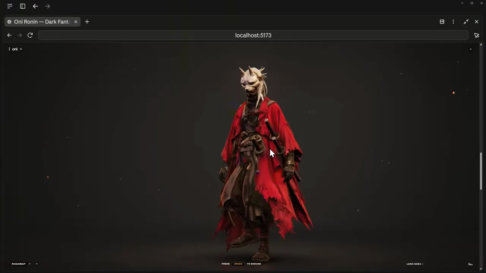
걸음걸이와 첫 장면 다듬기
후속 프롬프트는 짧아요. 아래 화면 첫 문단이 핵심이에요. 다른 건 다 좋은데 3D 캐릭터의 걸음, 특히 다리가 어색하니 자연스럽게 고치고 캐릭터에 오라를 더해 달라고 했어요. 그 아래 번호 두 줄은 덤으로 붙인 요청이에요.
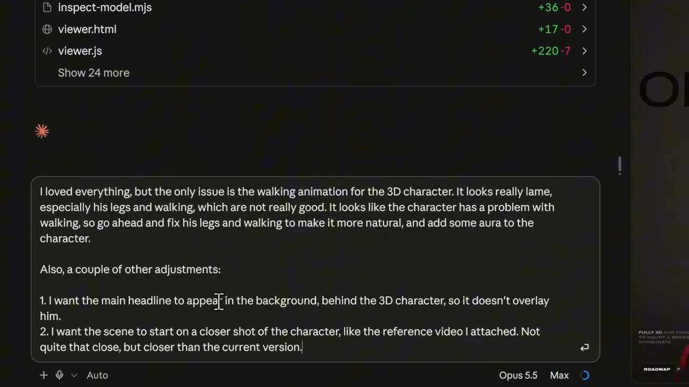
- 제목 위치 — 큰 제목이 캐릭터를 덮지 않게 캐릭터 뒤 배경으로 보내요.
- 첫 장면 — 참고 영상만큼은 아니어도 지금보다 캐릭터에 가깝게 시작해요.
걸음을 프레임별로 펼쳐 놓고 진단해요
Claude는 바로 고치지 않고 계획부터 세웠어요. 아래 화면 'Plan' 세 줄이 그 순서예요. ① 걸음을 프레임별 이미지(옆·앞, 코트 있고 없고)로 펼쳐 다리에 무슨 문제가 있는지 보고, ② 실제 사람의 엉덩이·무릎·발목 움직임 곡선으로 걸음을 다시 만들고, ③ 오라·제목·첫 장면을 손봐요. 오른쪽 'Model viewer (dev)' 창에 펼쳐 놓은 열두 컷이 그 프레임별 이미지예요.
그 아래 문단이 진단 결과예요. 엉덩이가 약 5cm 너무 낮게 앉아 있어서 무릎이 펴지지 못했고, 그래서 다친 사람처럼 무릎을 굽힌 채 끌듯이 걷고 있었다고 해요.

다듬은 결과
다시 띄운 화면이에요. 'ONI RONIN' 제목이 이제 캐릭터 뒤에 깔려서 캐릭터 머리가 제목 위로 올라와 있어요. 캐릭터 어깨와 머리 둘레에는 주황빛 오라가 생겼고, 첫 장면도 상반신이 화면을 채울 만큼 가까워졌어요.
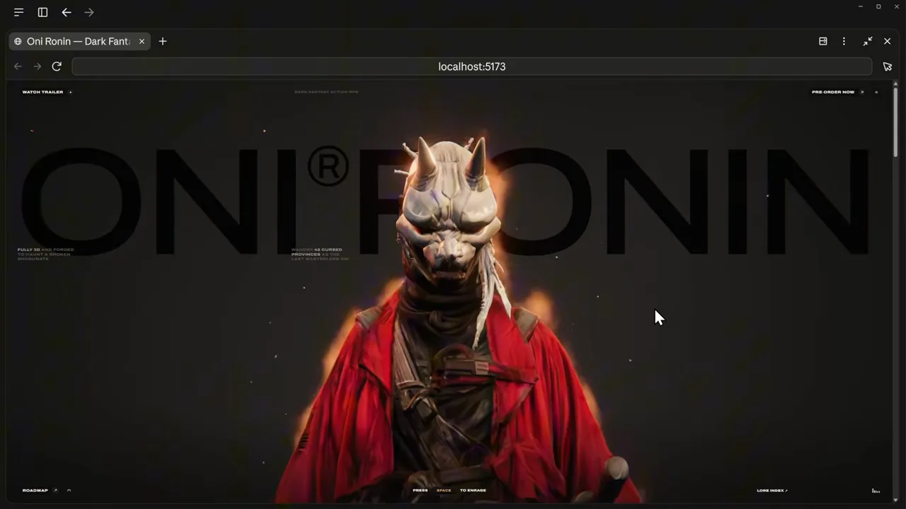
모델 없이 만든 3D 나선 카드 갤러리
이번엔 섹션 세 개와 푸터를 한 번에 더해요. 그중 하나는 일부러 어렵게 냈어요. 3D 모델을 주지 않고 참고 영상만으로 3D 요소와 효과를 처음부터 만들게 한 거예요. 발표자는 화면에 보이는 프롬프트 그대로의 결과이고, Anthropic과 제휴 관계도 없다고 따로 밝혀요.
참고: 유리 카드가 도는 서비스 섹션
참고한 사이트의 서비스 섹션이에요. 가운데 축 둘레로 유리 질감 카드('RACER' 같은 제목이 붙은)가 떠 있고, 뒤로 보라·분홍 입자가 흩날려요. 스크롤하면 이 카드들이 원을 그리며 돌아요.
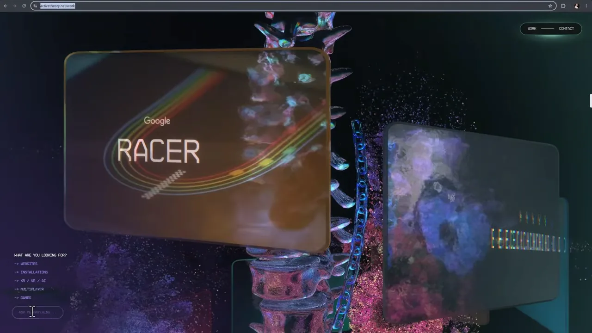
카드 요구 사항 일곱 줄
프롬프트 앞부분에서는 '스크롤 기반 3D 나선 갤러리'를 설명해요. 프로젝트 카드가 중심 수직축 둘레를 돌고, 가운데에 3D 요소가 있고, 원근감 있게 나선형으로 내려가요. 가운데 요소는 쓰는 도중에 검으로 정했어요. 캐릭터와 사이트 분위기에 맞추려고요. 아래 화면은 그 뒤에 붙인 카드 요구 사항 일곱 줄이에요.
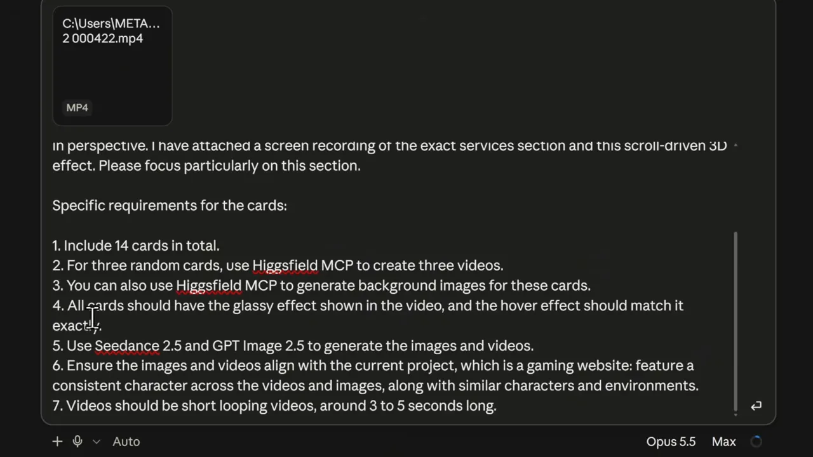
| 번호 | 요구 사항 |
|---|---|
| 1 | 카드는 모두 14장 |
| 2 | 무작위 3장에는 Higgsfield MCP로 만든 영상을 넣어요 |
| 3 | 카드 배경 이미지도 Higgsfield MCP로 만들 수 있어요 |
| 4 | 모든 카드에 영상 속 유리 효과를 주고, 호버 효과도 똑같이 맞춰요 |
| 5 | 이미지와 영상은 Seedance 2.5와 GPT Image 2.5로 만들어요 |
| 6 | 게임 사이트에 맞게, 영상과 이미지 전반에 같은 캐릭터와 비슷한 인물·배경을 써요 |
| 7 | 영상은 3~5초짜리로 자연스럽게 반복되게 해요 |
결과: 검 둘레를 도는 카드
히어로 아래에는 글자가 하나씩 드러나는 소개 섹션이 먼저 생겼어요. 그다음이 'Special Services'예요. 아래 화면 가운데 세로로 선 것이 Claude가 직접 만든 검이에요. 붉은 손잡이 끈과 코등이까지 있고, 칼날 아래로 붉은 입자가 흩어져요. 뒤의 큰 글자 'SPECIAL SERVICES'가 검에 가려져 있어요.
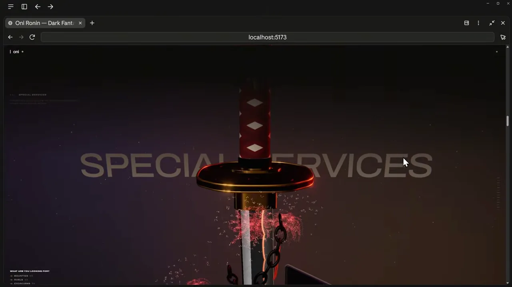
스크롤을 내리면 카드가 검 둘레를 나선형으로 돌며 다가와요. 아래 화면 앞쪽 카드 'SNOWFIELD SIEGE'는 눈밭의 사무라이 그림 위에 유리 질감 테두리가 있고, 뒤쪽에 'CASTLE OF RAIN' 카드가 보여요. 오른쪽 위에는 지금 카드의 번호와 이름이 바뀌어 떠요. 카드 이미지와 영상은 모두 Higgsfield MCP로 만든 것이에요.

나머지 섹션과 푸터도 사이트 톤에 잘 맞았어요. 발표자는 이 프로젝트를 두고, 기존 캐릭터 모델로 3D 장면과 애니메이션을 만들고 모델 없이도 상호작용 섹션을 하나 더 만들 만큼 AI 보조 개발이 멀리 왔다고 평가해요.
TestSprite 연결하기
미리보기에서 멋져 보여도 버튼이 안 눌리거나, 메뉴 이동이 꼬이거나, 작은 화면에서 배치가 깨질 수 있어요. 그래서 마지막 단계는 테스트예요. 발표자가 쓴 도구는 TestSprite예요. 실행 중인 사이트를 실제 사용자처럼 돌아다니며 엔드투엔드 테스트를 만들고, 코드가 오류 없이 도는지가 아니라 기능이 정말 동작하는지를 확인해요. 새로 나온 오픈소스 CLI로 터미널과 코딩 에이전트에 붙일 수 있어요.
시작하는 세 가지 길
새 프로젝트 화면이에요. 왼쪽 'Start by creating a project'는 이미 배포된 사이트용이에요. Test Type에서 Frontend UI(User Interface)와 Backend API(Application Programming Interface) 중 하나를 고르고, URL(Uniform Resource Locator)과 프로젝트 이름을 넣어요. 오른쪽 'Other ways to start'에 나머지 두 길이 있어요. 위가 CLI, 아래가 AI 채팅이에요.
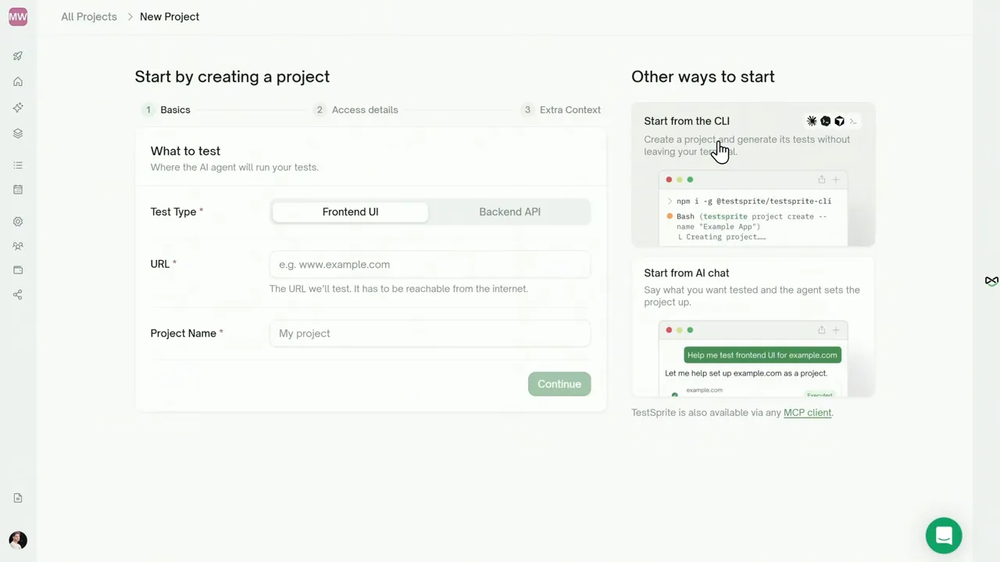
| 시작 방법 | 어떤 프로젝트에 | 하는 일 |
|---|---|---|
| URL 입력 | 이미 배포된 사이트 | URL과 이름을 넣고 프런트엔드·백엔드 API 중 하나를 골라요 |
| CLI | Claude Code, Codex, Cursor 같은 도구로 만든 프로젝트 | 터미널에서 설치하고 코딩 에이전트가 테스트를 돌려요 |
| AI 채팅 | MCP 클라이언트를 쓰는 경우 | 채팅에서 AI 비서에게 테스트를 부탁해요 |
CLI 설정 세 단계
발표자는 가장 간단한 CLI를 골랐어요. 고르면 아래 'Install TestSprite CLI' 창이 떠요. 단계가 숫자 1·2·3으로 나뉘어 있어요.
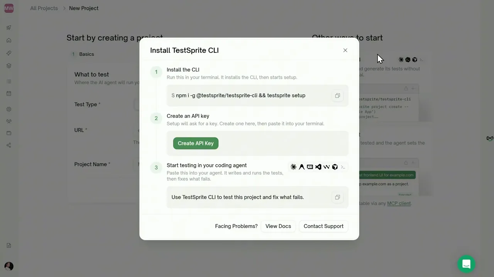
- CLI를 설치해요 — 창에는 설치와 설정이 한 줄로 붙어 있지만, 발표자는 무슨 일이 일어나는지 보이게 나눠서 돌렸어요.
setup이 Claude Code를 쓰는 걸 알아채고 API 키를 물어요npm i -g @testsprite/testsprite-cli testsprite setup - API 키를 만들어 붙여 넣어요 — 대시보드에서 Create API Key를 누르고 이름을 붙여 만든 뒤, 복사해 터미널에 넣어요. CLI 설치와 프로젝트 설정이 끝나요
- 프롬프트를 코딩 에이전트에 보내요 — 주어진 프롬프트에 '프런트엔드 테스트 10개를 돌려 달라'를 덧붙였어요.
아래 화면이 3번을 보낸 직후예요. 가운데 말풍선이 보낸 프롬프트이고, 그 아래 Claude가 /testsprite-onboard 스킬을 실행하고 있어요. 오른쪽 터미널에는 setup이 알려 준 다음 단계(testsprite project create, testsprite test run --all)가 남아 있어요. 오른쪽 아래 입력창의 effort는 Medium이에요.
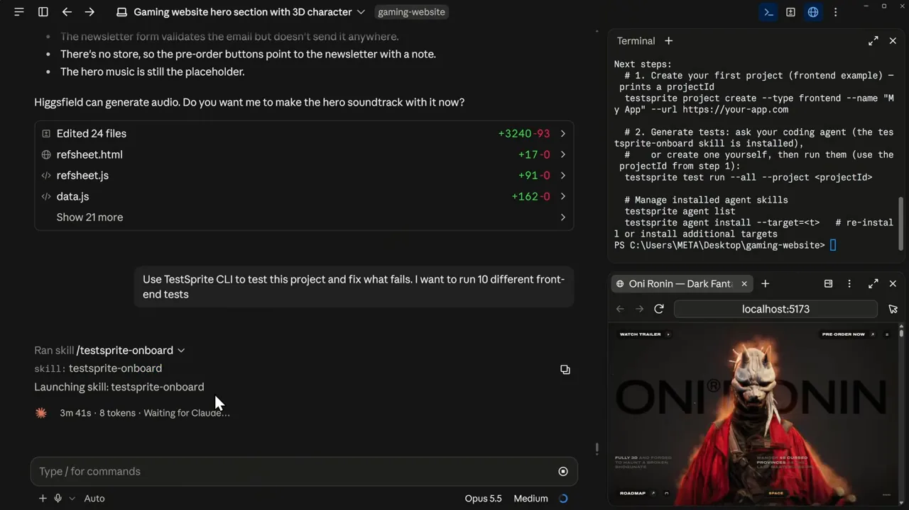
테스트 돌리고 고치기
Claude가 테스트 10개를 짜서 CLI로 돌렸어요. TestSprite 대시보드의 Projects에 'gaming-website (Oni Ronin)' 프로젝트가 생겼고, 아래 화면 위쪽 숫자를 보면 All 10, Passed 10, Failed 0이에요. 목록에는 Arsenal, Editions, Footer, Hero, Loader, Menu처럼 사이트 구역별로 이름 붙은 테스트가 보여요.
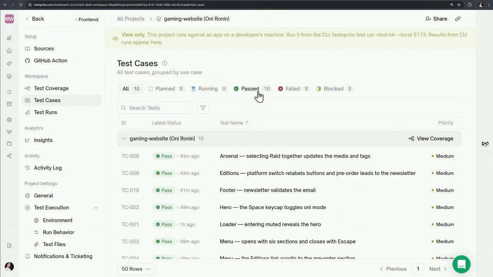
처음엔 실패했던 두 테스트
테스트 하나를 열어 보면 이력이 남아 있어요. 아래 화면은 에디션 섹션 테스트(TC-009)예요. 플랫폼 전환 시 버튼 이름이 바뀌는지, 사전 주문 버튼이 뉴스레터 섹션으로 이어지는지를 확인해요. 맨 아래 실행 기록을 보면 1시간 전 'Failed', 44분 전 'Pass'예요. 동작 하나가 안 됐는데 실패 내용이 Claude에게 돌아갔고, Claude가 사람 손 없이 고친 뒤 다시 돌린 거예요.
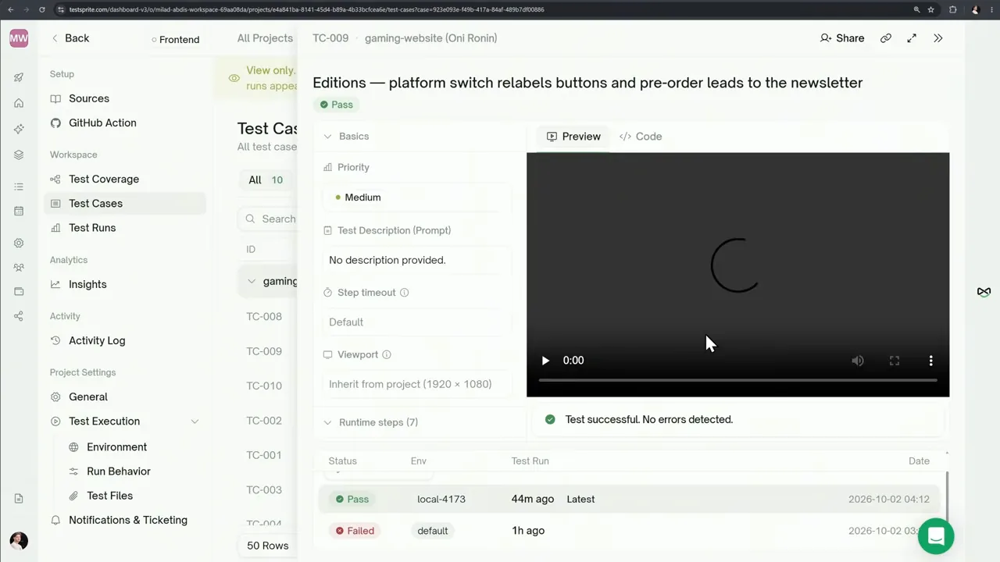
다른 하나는 Special Services 섹션의 검색 기능이에요. 검색창이 그럴듯해 보였지만 실제로는 아무 일도 안 하는 모양뿐이었어요. TestSprite가 이걸 잡아냈고 Claude가 실제로 검색되게 고쳤어요. 겉모습만 만들어 둔 기능은 눈으로 봐서는 놓치기 쉬운데, 실제로 눌러 보는 테스트라서 드러난 거예요.
테스트가 무엇을 눌렀는지 보여요
테스트마다 화면 녹화와 실행 단계가 남아요. 아래 화면 왼쪽 'Execution Steps (7)'을 보면 1단계 localhost:4173 열기, 2단계 'Enter muted' 버튼 누르기, 3단계 메뉴 열기, 4단계 '07 Editions' 링크 누르기처럼 사람이 하는 순서 그대로 적혀 있어요. 오른쪽에는 그 과정을 녹화한 12초짜리 영상이 있어요. 단계는 직접 보고 고칠 수도 있어요.
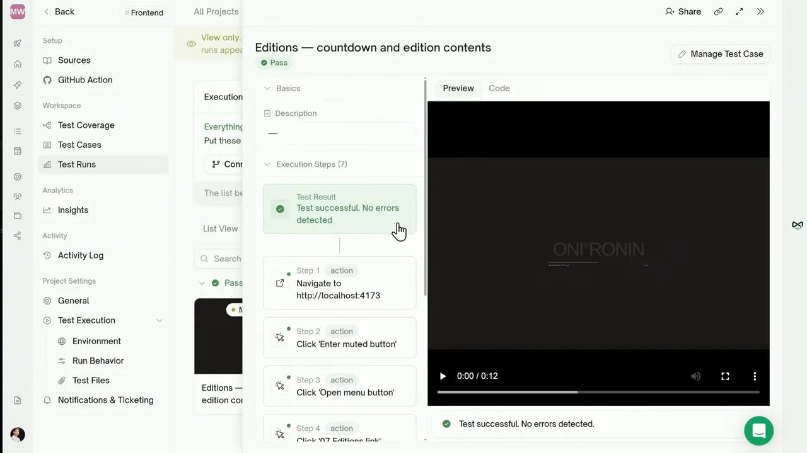
그 사이 5개를 더 돌렸을 때는 모두 통과했어요. 발표자는 실패가 실제로 일어나는 장면을 보여 주려고 8개를 더 돌렸어요. 세 번의 실행을 한 그림으로 모으면 이래요. 칸 하나가 테스트 하나예요.
사운드 토글 실패를 따라가 봐요
세 번째 묶음에서 사운드 토글 버튼 테스트가 실패했어요. TestSprite는 사용자가 소리를 켜고 끌 때 버튼이 지금 상태를 분명히 보여 주는지 확인했는데, 버튼 모양이 그대로라 어느 상태인지 알 수 없었어요. 실패 화면에는 녹화, 테스트 코드(Code 탭), 오류, 원인, 수정 탭이 있어요. 아래 화면의 Error 탭을 보면 'Toggle soundtrack' 버튼이 처음에 aria-pressed="false"여야 하는데 "true"였다고 적혀 있어요.

Cause 탭은 원인을 추정해요. 처음부터 켜진 상태로 그려지는 이유를 세 가지 후보로 들어요. 초기값이 true로 잡혔거나, 저장된 설정이 true로 복원됐거나, 자동 재생 코드가 테스트 전에 켰을 수 있다는 거예요. 왼쪽 단계 목록에는 같은 버튼을 5·6·7단계에서 거듭 누른 기록이 보여요. 오른쪽 위 'Copy Fix Prompt'는 에이전트가 알아서 못 고칠 때 복사해서 직접 보내라고 있는 버튼이에요.
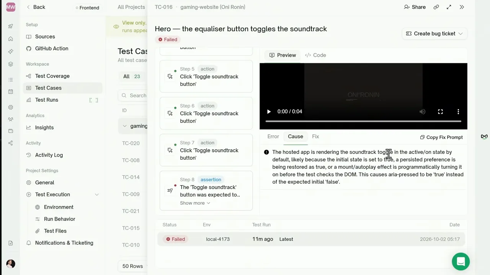
Claude 쪽에서는 이렇게 받아요. 아래 화면 위쪽 로그 끝에 'Batch run complete: 7/8 passed, 1 failed'가 찍혀 있어요. 그 아래 문단이 Claude의 판단이에요. 켜짐·꺼짐이 보이지 않는 aria-pressed 속성에만 있고 눈에 보이는 표시가 없어서, 테스트 에이전트가 상태를 모른 채 버튼을 거듭 눌렀다는 거예요. Claude는 이를 진짜 UX(User Experience) 문제로 보고 고치기로 해요.
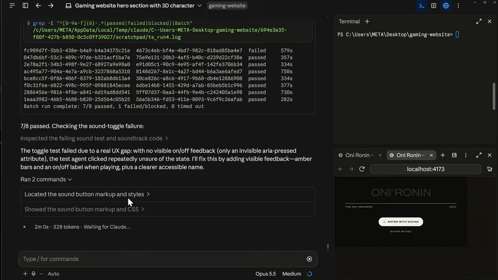
고친 내용은 네 가지예요. 재생 중일 때 보이는 호박색 막대, 'ON/OFF' 글자, '지금 재생 중' 표시, 더 분명한 접근성 이름이에요. 다시 돌린 테스트는 통과했어요. 아래 화면은 새로 생긴 TC-024 'the sound button toggles the soundtrack on and off'가 Pass로 끝난 모습이에요. 사이트에서도 버튼 모양이 바뀌어 상태가 한눈에 보여요.
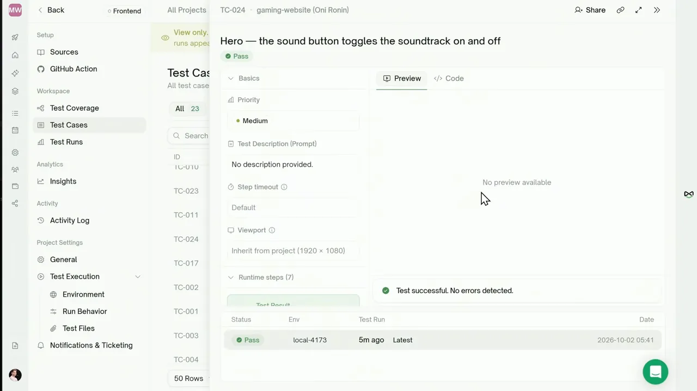
이 흐름을 정리하면 아래처럼 돌아요. 사람이 끼어드는 자리는 에이전트가 못 고칠 때 수정용 프롬프트를 대신 보내는 것 하나뿐이에요.
flowchart LR
A["Claude: 테스트 계획"] --> B["TestSprite CLI: 실제 사이트에서 실행"]
B --> C{"통과?"}
C -->|예| D["끝"]
C -->|아니오| E["실패 상세: 녹화·오류·원인"]
E --> F["Claude: 원인 분석·수정"]
F --> B
E -.->|에이전트가 못 고치면| G["사람: Fix Prompt 복사해 전달"]
G --> F
TestSprite로는 프런트엔드, 백엔드, 또는 둘 다 테스트할 수 있어요. 설정이나 테스트 중에 막히면 TestSprite 에이전트에게 물어보면 돼요. 왼쪽 메뉴에는 이 밖에도 두 가지가 있어요. Sources는 사이트를 탐색하게 하거나 문서를 올려 제품 맥락을 주는 곳이라 더 알맞은 테스트를 만들게 해요. GitHub Action은 저장소를 연결해서 CI(Continuous Integration)가 돌 때 테스트도 함께 돌고, 결과를 코드 변경 옆에서 보게 해요.